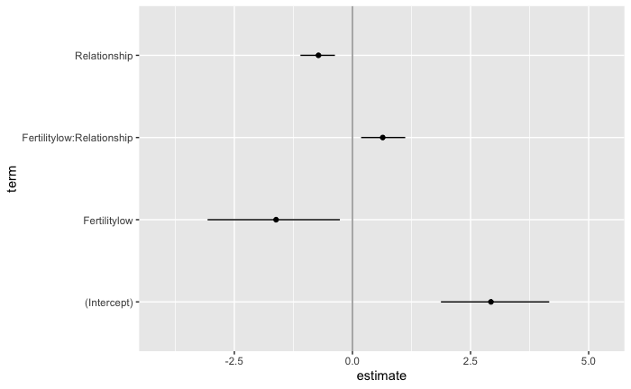

Extracting and Visualizing the results of a multiverse analysis
Abhraneel Sarma
2019-10-07
complete-multiverse-analysis.RmdIntroduction
In this document, we outline an initial approach to conducting a multiverse analysis in R. We will show how our package can be used to perform the multiverse analysis outlined by Steegen et al. in Increasing Transparency Through a Multiverse Analysis.
Data analysis can involve several decisions involving two or more options. In most statistical analysis, these decisions are taken by the researcher based on some reasonable justification. However, for several decisions, there can be more than one reasonable options to choose from. A multiverse analysis is a form of analysis which makes all such decisions explicit and conducts the complete analysis for all combinations of options (of each decision).
Below, we illustrate an example of a single analysis for a dataset. And then extend it to a multiverse analysis.
The data
The first step is to read the raw data from the file and store it as a tibble. We will be following the tidy data format here. The data is stored in two text files, and we can use readr to read the files into R. In this example, we will use the data collected by Durante et al., which investigated the effect of fertility on religiosity and political attitudes. We will focus on their second study (which we store in data.raw.study2).
data("durante")
data.raw.study2 <- durante %>%
mutate(
Abortion = abs(7 - Abortion) + 1,
StemCell = abs(7 - StemCell) + 1,
Marijuana = abs(7 - Marijuana) + 1,
RichTax = abs(7 - RichTax) + 1,
StLiving = abs(7 - StLiving) + 1,
Profit = abs(7 - Profit) + 1,
FiscConsComp = FreeMarket + PrivSocialSec + RichTax + StLiving + Profit,
SocConsComp = Marriage + RestrictAbortion + Abortion + StemCell + Marijuana
)The data look like this:
## # A tibble: 10 x 26
## WorkerID Rel1 Rel2 Rel3 Abortion Marriage StemCell RestrictAbortion
## <dbl> <dbl> <dbl> <dbl> <dbl> <dbl> <dbl> <dbl>
## 1 1 8 8 7 6 7 1 7
## 2 2 8 7 7 1 2 3 1
## 3 3 6 6 2 5 1 2 4
## 4 4 7 8 6 1 5 2 2
## 5 5 7 7 9 1 1 4 1
## 6 6 9 9 9 7 7 2 7
## 7 7 5 8 5 3 4 3 5
## 8 8 1 1 1 1 1 2 1
## 9 9 7 7 7 5 1 2 1
## 10 10 6 6 6 3 5 3 1
## # … with 18 more variables: Marijuana <dbl>, FreeMarket <dbl>,
## # RichTax <dbl>, StLiving <dbl>, Profit <dbl>, PrivSocialSec <dbl>,
## # Sure1 <dbl>, Sure2 <dbl>, Relationship <dbl>,
## # ReportedCycleLength <dbl>, Vote <dbl>, Donate <dbl>,
## # DateTesting <date>, StartDateofLastPeriod <date>,
## # StartDateofPeriodBeforeLast <date>, StartDateNext <date>,
## # FiscConsComp <dbl>, SocConsComp <dbl>The original paper looked at the relationship between fertility, relationship status, and religiousity. But there are many reasonable ways to have defined each of these three variables from this dataset, so it is a good candidate for multiverse analysis.
A single data set analysis: one possible analysis among many
The data collected needs to be processed before it can be modeled. Preparing the data set for analysis can involve several steps and decisions regarding how to encode the different raw values. The following is one example of data processing that can be performed for this study.
one_universe = data.raw.study2 %>%
mutate( ComputedCycleLength = StartDateofLastPeriod - StartDateofPeriodBeforeLast ) %>%
mutate( NextMenstrualOnset = StartDateofLastPeriod + ComputedCycleLength ) %>%
mutate(
CycleDay = 28 - (NextMenstrualOnset - DateTesting),
CycleDay = ifelse(CycleDay > 1 & CycleDay < 28, CycleDay, ifelse(CycleDay < 1, 1, 28))
) %>%
mutate(
Relationship = factor(ifelse(Relationship==1 | Relationship==2, "Single", "Relationship"))
) %>%
filter( ComputedCycleLength > 25 & ComputedCycleLength < 35) %>%
filter( Sure1 > 6 | Sure2 > 6 ) %>%
mutate( Fertility = factor( ifelse(CycleDay >= 7 & CycleDay <= 14, "high", ifelse(CycleDay >= 17 & CycleDay <= 25, "low", "medium")) ) )The transformed data for this one universe looks like this:
one_universe %>%
select( NextMenstrualOnset, Relationship, Sure1, Sure2, Fertility, everything() ) %>%
head(10)## # A tibble: 10 x 30
## NextMenstrualOn… Relationship Sure1 Sure2 Fertility WorkerID Rel1 Rel2
## <date> <fct> <dbl> <dbl> <fct> <dbl> <dbl> <dbl>
## 1 2012-06-17 Relationship 9 9 medium 1 8 8
## 2 2012-05-28 Relationship 9 7 low 2 8 7
## 3 2012-05-31 Relationship 8 7 low 3 6 6
## 4 2012-05-23 Single 8 8 medium 6 9 9
## 5 2012-05-31 Relationship 9 9 low 7 5 8
## 6 2012-06-15 Single 8 8 medium 11 2 5
## 7 2012-06-08 Relationship 9 8 high 12 7 7
## 8 2012-06-14 Relationship 9 8 medium 13 9 9
## 9 2012-06-10 Relationship 9 9 high 17 6 4
## 10 2012-06-18 Single 9 9 medium 18 9 9
## # … with 22 more variables: Rel3 <dbl>, Abortion <dbl>, Marriage <dbl>,
## # StemCell <dbl>, RestrictAbortion <dbl>, Marijuana <dbl>,
## # FreeMarket <dbl>, RichTax <dbl>, StLiving <dbl>, Profit <dbl>,
## # PrivSocialSec <dbl>, ReportedCycleLength <dbl>, Vote <dbl>,
## # Donate <dbl>, DateTesting <date>, StartDateofLastPeriod <date>,
## # StartDateofPeriodBeforeLast <date>, StartDateNext <date>,
## # FiscConsComp <dbl>, SocConsComp <dbl>, ComputedCycleLength <drtn>,
## # CycleDay <dbl>one_universe %>%
ggplot(aes(x = Relationship, y = Rel1 + Rel2 + Rel3, color = Fertility)) +
stat_summary(position = position_dodge(width = .1), fun.data = "mean_se")
However, there also exists other valid processing options: instead of calculating NextMenstrualOnset = StartDateofLastPeriod + ComputedCycleLength, it can also be calculated as StartDateofLastPeriod + ReportedCycleLength. Such alternate processing options can exist for several decisions that a researcher makes in the data processing, analysis and presentation stages. This can thus result in a multiverse of analysis, with the one described above representing a single universe.
Below, we describe how our package allows you to conduct a multiverse analysis with ease.
Defining the multiverse
multidy provides flexible functions which can be used to perform a multiverse analysis.
The first step is to define a new multiverse. We will use the multiverse object to create a set of universes, each representing a different way of analysing our data.
The next step is to define our possible analyses inside the multiverse. The multidy package includes functions that aim to make it easy to write multiverse analyses in as close a way to a single universe analysis as possible (as seen in the single analysis shown above).
Consider these first few lines from the transformation code in the single analysis above:
df <- data.raw.study2 %>%
mutate(ComputedCycleLength = StartDateofLastPeriod - StartDateofPeriodBeforeLast) %>%
mutate(NextMenstrualOnset = StartDateofLastPeriod + ComputedCycleLength)But NextMenstrualOnset could be calculated in at least two other reasonable ways:
NextMenstrualOnset = StartDateofLastPeriod + ReportedCycleLengthNextMenstrualOnset = StartDateNext
To create a multiverse that includes these three possible processing options, we can use the branch() function. The branch() function defines a parameter (here menstrual_calculation) and the different options that the parameter can take (here, "mc_option1", "mc_option2", "mc_option3"). Each option corresponds to a different chunk of code that would be executed in a different universe.
NextMenstrualOnset = branch(menstrual_calculation,
"mc_option1" ~ StartDateofLastPeriod + ComputedCycleLength,
"mc_option2" ~ StartDateofLastPeriod + ReportedCycleLength,
"mc_option3" ~ StartDateNext
)The branch() function indicates that, in our multiverse, NextMenstrualOnset can take either of the three options (here, "mc_option1", "mc_option2", "mc_option3"). Thus, we need to declare this data processing step inside the multiverse. We do this by using the inside() function. The inside() function takes in two arguments: 1. the multiverse object, M; and 2. the code for the analysis (including branches). Note that if you are passing multiple expressions, they should be enclosed within {}.
# here we just create the variable `df` in the multiverse
inside(M, df <- data.raw.study2)
# here, we perform two `mutate` operations in the multiverse.
# although they could have been chained, this illustrates
# how multiple variables can be declared together using the `{}`
inside(M, {
df <- df %>%
mutate( ComputedCycleLength = StartDateofLastPeriod - StartDateofPeriodBeforeLast )
df <- df %>%
mutate( NextMenstrualOnset = branch(menstrual_calculation,
"mc_option1" ~ StartDateofLastPeriod + ComputedCycleLength,
"mc_option2" ~ StartDateofLastPeriod + ReportedCycleLength,
"mc_option3" ~ StartDateNext)
)
})Alternative to the inside function, we can use the more concise <- operator to define the multiverse. However, any expression on the right-hand-side of the <- operator needs to be preceded by the ~ (tilde) which converts the expression to a formula. Thus, the syntax looks like: <multiverse_object>$<variable_name> <- ~ <expression>
M$df <- ~ data.raw.study2 %>%
mutate( ComputedCycleLength = StartDateofLastPeriod - StartDateofPeriodBeforeLast ) %>%
mutate(NextMenstrualOnset = branch(menstrual_calculation,
"mc_option1" ~ StartDateofLastPeriod + ComputedCycleLength,
"mc_option2" ~ StartDateofLastPeriod + ReportedCycleLength,
"mc_option3" ~ StartDateNext)
)The multiverse, with declared code and branches
Once you add the code to the multiverse, it automatically parses the code to identify the parameters and the corresponding options that have been defined for each parameter.
Once the code has been added, the multiverse object will have the following attributes:
-
parameters, which is a list of parameters
## $menstrual_calculation
## $menstrual_calculation[[1]]
## [1] "mc_option1"
##
## $menstrual_calculation[[2]]
## [1] "mc_option2"
##
## $menstrual_calculation[[3]]
## [1] "mc_option3"-
conditions, which is a list of conditions (we’ll define this later) -
multiverse_table, which is a tibble consisting of all possible combination of values for the multiverse
## # A tibble: 3 x 5
## .universe menstrual_calculation .parameter_assignment .code .results
## <int> <chr> <list> <list> <list>
## 1 1 mc_option1 <named list [1]> <language> <env>
## 2 2 mc_option2 <named list [1]> <language> <env>
## 3 3 mc_option3 <named list [1]> <language> <env>-
current_parameter_assignment, which is a list of one set of options for each parameter defined in the multiverse. It initialises to the first option for each parameter. This should be the default analysis.
## $menstrual_calculation
## [1] "mc_option1"-
code, which is the code that the user passes to the multiverse to conduct a multiverse analysis. However, we do not execute this code and it is stored unevaluated. The user can interactively edit and rewrte this code, and can execute it for the current analysis or the entire multiverse using dedicated functions.
## {
## df <- data.raw.study2
## df <- df %>% mutate(ComputedCycleLength = StartDateofLastPeriod -
## StartDateofPeriodBeforeLast)
## df <- df %>% mutate(NextMenstrualOnset = branch(menstrual_calculation,
## "mc_option1" ~ StartDateofLastPeriod + ComputedCycleLength,
## "mc_option2" ~ StartDateofLastPeriod + ReportedCycleLength,
## "mc_option3" ~ StartDateNext))
## }Running a single analysis from the multiverse
At this point, we have defined three possible processing options (three universes) in our multiverse. Keeping consistency with the interactive programming interface of RStudio, we also execute the default analysis in each step. In the previous step, we stored the results in the variable df. We can see the result of this analysis in the appropriate row (universe) of the multiverse table.
## # A tibble: 6 x 28
## WorkerID Rel1 Rel2 Rel3 Abortion Marriage StemCell RestrictAbortion
## <dbl> <dbl> <dbl> <dbl> <dbl> <dbl> <dbl> <dbl>
## 1 1 8 8 7 6 7 1 7
## 2 2 8 7 7 1 2 3 1
## 3 3 6 6 2 5 1 2 4
## 4 4 7 8 6 1 5 2 2
## 5 5 7 7 9 1 1 4 1
## 6 6 9 9 9 7 7 2 7
## # … with 20 more variables: Marijuana <dbl>, FreeMarket <dbl>,
## # RichTax <dbl>, StLiving <dbl>, Profit <dbl>, PrivSocialSec <dbl>,
## # Sure1 <dbl>, Sure2 <dbl>, Relationship <dbl>,
## # ReportedCycleLength <dbl>, Vote <dbl>, Donate <dbl>,
## # DateTesting <date>, StartDateofLastPeriod <date>,
## # StartDateofPeriodBeforeLast <date>, StartDateNext <date>,
## # FiscConsComp <dbl>, SocConsComp <dbl>, ComputedCycleLength <drtn>,
## # NextMenstrualOnset <date>A multiverse with all possible combinations specified
Besides calculating the onset of the next menstruation cycle, there are other variables which have multiple valid and reasonable processing options. These include defining Relationship and Fertility, and exclusion criteria based on the values for cycle length and certainty of responses. The next code chunk illustrates how this can be added to the multiverse object defined above. We’ll also try the more concise <- assignment operator now.
M$df <- ~ df %>%
mutate(Relationship = branch( relationship_status,
"rs_option1" ~ factor(ifelse(Relationship==1 | Relationship==2, 'Single', 'Relationship')),
"rs_option2" ~ factor(ifelse(Relationship==1, 'Single', 'Relationship')),
"rs_option3" ~ factor(ifelse(Relationship==1, 'Single', ifelse(Relationship==3 | Relationship==4, 'Relationship', NA))) )
) %>%
mutate(
CycleDay = 28 - (NextMenstrualOnset - DateTesting),
CycleDay = ifelse(CycleDay > 1 & CycleDay < 28, CycleDay, ifelse(CycleDay < 1, 1, 28))
) %>%
filter( branch(cycle_length,
"cl_option1" ~ TRUE,
"cl_option2" ~ ComputedCycleLength > 25 & ComputedCycleLength < 35,
"cl_option3" ~ ReportedCycleLength > 25 & ReportedCycleLength < 35
)) %>%
filter( branch(certainty,
"cer_option1" ~ TRUE,
"cer_option2" ~ Sure1 > 6 | Sure2 > 6
)) %>%
mutate( Fertility = branch( fertile,
"fer_option1" ~ factor( ifelse(CycleDay >= 7 & CycleDay <= 14, "high", ifelse(CycleDay >= 17 & CycleDay <= 25, "low", "medium")) ),
"fer_option2" ~ factor( ifelse(CycleDay >= 6 & CycleDay <= 14, "high", ifelse(CycleDay >= 17 & CycleDay <= 27, "low", "medium")) ),
"fer_option3" ~ factor( ifelse(CycleDay >= 9 & CycleDay <= 17, "high", ifelse(CycleDay >= 18 & CycleDay <= 25, "low", "medium")) ),
"fer_option4" ~ factor( ifelse(CycleDay >= 8 & CycleDay <= 14, "high", "low") ),
"fer_option5" ~ factor( ifelse(CycleDay >= 8 & CycleDay <= 17, "high", "low") )
))Since the multiverse object has already been created and the one parameter has already been defined, the inside function will add to the previous code.
## {
## df <- data.raw.study2
## df <- df %>% mutate(ComputedCycleLength = StartDateofLastPeriod -
## StartDateofPeriodBeforeLast)
## df <- df %>% mutate(NextMenstrualOnset = branch(menstrual_calculation,
## "mc_option1" ~ StartDateofLastPeriod + ComputedCycleLength,
## "mc_option2" ~ StartDateofLastPeriod + ReportedCycleLength,
## "mc_option3" ~ StartDateNext))
## df <- df %>% mutate(Relationship = branch(relationship_status,
## "rs_option1" ~ factor(ifelse(Relationship == 1 | Relationship ==
## 2, "Single", "Relationship")), "rs_option2" ~ factor(ifelse(Relationship ==
## 1, "Single", "Relationship")), "rs_option3" ~ factor(ifelse(Relationship ==
## 1, "Single", ifelse(Relationship == 3 | Relationship ==
## 4, "Relationship", NA))))) %>% mutate(CycleDay = 28 -
## (NextMenstrualOnset - DateTesting), CycleDay = ifelse(CycleDay >
## 1 & CycleDay < 28, CycleDay, ifelse(CycleDay < 1, 1,
## 28))) %>% filter(branch(cycle_length, "cl_option1" ~
## TRUE, "cl_option2" ~ ComputedCycleLength > 25 & ComputedCycleLength <
## 35, "cl_option3" ~ ReportedCycleLength > 25 & ReportedCycleLength <
## 35)) %>% filter(branch(certainty, "cer_option1" ~ TRUE,
## "cer_option2" ~ Sure1 > 6 | Sure2 > 6)) %>% mutate(Fertility = branch(fertile,
## "fer_option1" ~ factor(ifelse(CycleDay >= 7 & CycleDay <=
## 14, "high", ifelse(CycleDay >= 17 & CycleDay <= 25,
## "low", "medium"))), "fer_option2" ~ factor(ifelse(CycleDay >=
## 6 & CycleDay <= 14, "high", ifelse(CycleDay >= 17 &
## CycleDay <= 27, "low", "medium"))), "fer_option3" ~
## factor(ifelse(CycleDay >= 9 & CycleDay <= 17, "high",
## ifelse(CycleDay >= 18 & CycleDay <= 25, "low",
## "medium"))), "fer_option4" ~ factor(ifelse(CycleDay >=
## 8 & CycleDay <= 14, "high", "low")), "fer_option5" ~
## factor(ifelse(CycleDay >= 8 & CycleDay <= 17, "high",
## "low"))))
## }The multiverse_table will contain all the possible combinations of the parameter options that have been identified.
## # A tibble: 6 x 9
## .universe menstrual_calcu… relationship_st… cycle_length certainty
## <int> <chr> <chr> <chr> <chr>
## 1 1 mc_option1 rs_option1 cl_option1 cer_opti…
## 2 2 mc_option2 rs_option1 cl_option1 cer_opti…
## 3 3 mc_option3 rs_option1 cl_option1 cer_opti…
## 4 4 mc_option1 rs_option2 cl_option1 cer_opti…
## 5 5 mc_option2 rs_option2 cl_option1 cer_opti…
## 6 6 mc_option3 rs_option2 cl_option1 cer_opti…
## # … with 4 more variables: fertile <chr>, .parameter_assignment <list>,
## # .code <list>, .results <list>In our multiverse we have identified 5 options for calculating fertility, 3 options for calculating menstrual calculation and relationship status each, 3 wyas of excluding participants based on their cycle length and 2 ways of excluding participants based on the self-reported certainty of their responses.
This results in $ 5 3 3 3 2 = 270$ possible combinations.
## [1] 270We can then inspect the default analysis the default single universe analysis from this multiverse:
## # A tibble: 6 x 30
## WorkerID Rel1 Rel2 Rel3 Abortion Marriage StemCell RestrictAbortion
## <dbl> <dbl> <dbl> <dbl> <dbl> <dbl> <dbl> <dbl>
## 1 1 8 8 7 6 7 1 7
## 2 2 8 7 7 1 2 3 1
## 3 3 6 6 2 5 1 2 4
## 4 4 7 8 6 1 5 2 2
## 5 5 7 7 9 1 1 4 1
## 6 6 9 9 9 7 7 2 7
## # … with 22 more variables: Marijuana <dbl>, FreeMarket <dbl>,
## # RichTax <dbl>, StLiving <dbl>, Profit <dbl>, PrivSocialSec <dbl>,
## # Sure1 <dbl>, Sure2 <dbl>, Relationship <fct>,
## # ReportedCycleLength <dbl>, Vote <dbl>, Donate <dbl>,
## # DateTesting <date>, StartDateofLastPeriod <date>,
## # StartDateofPeriodBeforeLast <date>, StartDateNext <date>,
## # FiscConsComp <dbl>, SocConsComp <dbl>, ComputedCycleLength <drtn>,
## # NextMenstrualOnset <date>, CycleDay <dbl>, Fertility <fct>Specifying conditions in the multiverse analysis
In a multiverse analysis, it may occur that the value of one variable might depend on the value of another variable defined previously. For example, in our example, we are excluding participants based on their cycle length. This can be done in two ways: we can use the values of the variable,ComputedCycleLength or ReportedCycleLength. If we are using ComputedCycleLength to exclude participants, this means that we should not calculate the variable NextMenstrualOnset (date for the onset of the next menstrual cycle) using the ReportedCycleLength value. Similarly, if we are using ReportedCycleLength to exclude participants it is inconsistent to calculate NextMenstrualOnset using ComputedCycleLength.
We should be able to express these conditions in the multiverse. We can do this in two ways: 1. %when%: when declaring a branch, we can use this operator to specify the conditional \(A | B\) as A %when% B. The conditional \(A | B\) is also referred to as the connective \(A \implies B\). This has the meaning “if A is true, then B is also true” and is an abbreviation for \(\neg A | B\) 2. branch_assert: this function allows the user to specify any condition in the form of a logical operation
The %when% operator
There are two ways in which you can specify the %when% operator. The first is to specify it at the end of the branch. This will work even if you omit the branch option name.
M$df <- data.raw.study2 %>%
mutate( ComputedCycleLength = StartDateofLastPeriod - StartDateofPeriodBeforeLast ) %>%
mutate(NextMenstrualOnset = branch(menstrual_calculation,
"mc_option1" ~ (StartDateofLastPeriod + ComputedCycleLength) %when% (cycle_length != "cl_option3"),
"mc_option2" ~ (StartDateofLastPeriod + ReportedCycleLength) %when% (cycle_length != "cl_option2"),
"mc_option3" ~ StartDateNext)
)The other is to specify it at the head of the branch, right after the option name:
M$df <- df %>%
mutate(NextMenstrualOnset = branch(menstrual_calculation,
"mc_option1" %when% (cycle_length != "cl_option3") ~ StartDateofLastPeriod + ComputedCycleLength,
"mc_option2" %when% (cycle_length != "cl_option2") ~ (StartDateofLastPeriod + ReportedCycleLength),
"mc_option3" ~ StartDateNext)
)
The branch_assert() function
Within the branch assert function, the user can specify any logical operation.
For eg: the above logical operations can be specified as: branch_assert(menstrual_calculation != "mc_option1" | cycle_length != "cl_option3") or branch_assert(!(menstrual_calculation == "mc_option1" | cycle_length == "cl_option3"))
Both these operations have the same result, but the first may not be as easily interpretable. We specify the conditionals using the branch_assert() function in our example as:
M$df <- df %>%
mutate(NextMenstrualOnset = branch(menstrual_calculation,
"mc_option1" ~ StartDateofLastPeriod + ComputedCycleLength,
"mc_option2" ~ StartDateofLastPeriod + ReportedCycleLength,
"mc_option3" ~ StartDateNext)
) %>%
branch_assert( ! (menstrual_calculation == "mc_option1" & cycle_length == "cl_option3")) %>%
branch_assert( !(menstrual_calculation == "mc_option2" & cycle_length != "cl_option2"))Specifying these conditions allows us to exclude inconsistent combinations from our analyses. Let’s update our example by including these cnditions:
M = multiverse()
M$df <- ~ data.raw.study2 %>%
mutate( ComputedCycleLength = StartDateofLastPeriod - StartDateofPeriodBeforeLast ) %>%
dplyr::filter( branch(cycle_length,
"cl_option1" ~ TRUE,
"cl_option2" ~ ComputedCycleLength > 25 & ComputedCycleLength < 35,
"cl_option3" ~ ReportedCycleLength > 25 & ReportedCycleLength < 35
)) %>%
dplyr::filter( branch(certainty,
"cer_option1" ~ TRUE,
"cer_option2" ~ Sure1 > 6 | Sure2 > 6
)) %>%
mutate(NextMenstrualOnset = branch(menstrual_calculation,
"mc_option1" %when% (cycle_length != "cl_option3") ~ StartDateofLastPeriod + ComputedCycleLength,
"mc_option2" %when% (cycle_length != "cl_option2") ~ StartDateofLastPeriod + ReportedCycleLength,
"mc_option3" ~ StartDateNext)
) %>%
mutate(
CycleDay = 28 - (NextMenstrualOnset - DateTesting),
CycleDay = ifelse(CycleDay > 1 & CycleDay < 28, CycleDay, ifelse(CycleDay < 1, 1, 28))
) %>%
mutate( Fertility = branch( fertile,
"fer_option1" ~ factor( ifelse(CycleDay >= 7 & CycleDay <= 14, "high", ifelse(CycleDay >= 17 & CycleDay <= 25, "low", NA)) ),
"fer_option2" ~ factor( ifelse(CycleDay >= 6 & CycleDay <= 14, "high", ifelse(CycleDay >= 17 & CycleDay <= 27, "low", NA)) ),
"fer_option3" ~ factor( ifelse(CycleDay >= 9 & CycleDay <= 17, "high", ifelse(CycleDay >= 18 & CycleDay <= 25, "low", NA)) ),
"fer_option4" ~ factor( ifelse(CycleDay >= 8 & CycleDay <= 14, "high", "low") ),
"fer_option45" ~ factor( ifelse(CycleDay >= 8 & CycleDay <= 17, "high", "low") )
)) %>%
mutate(RelationshipStatus = branch(relationship_status,
"rs_option1" ~ factor(ifelse(Relationship==1 | Relationship==2, 'Single', 'Relationship')),
"rs_option2" ~ factor(ifelse(Relationship==1, 'Single', 'Relationship')),
"rs_option3" ~ factor(ifelse(Relationship==1, 'Single', ifelse(Relationship==3 | Relationship==4, 'Relationship', NA))) )
)After excluding the inconsistent choice combinations, \(270 − 2 \times (5 \times 1 \times 3 \times 1 \times 2) = 210\) choice combinations remain:
## [1] 210Now, we’ve created the complete multiverse that was presented as example #2 from Steegen et al.’s paper.
Modeling
Steegen et al. create 6 models. The first model uses data from example #1. The other five models use the data from example #2, which we’ve using so far.
Model #2: Effect of Fertility and Relationship status on Religiosity
The authors compute a composite score of Religiosity by calculating the average of the three Religiosity items.
The authors perform an ANOVA to study the effect of Fertility, Relationship and their interaction term, on the composite Religiosity score. We fit the linear model using the call: lm( RelComp ~ Fertility * RelationshipStatus, data = df ) inside our multiverse and save the result to a variable called fit_RelComp.
To extract the results from the analysis, we first create a tidy data-frame of the results of the model, using broom::tidy. Recall that declaring a variable in the multiverse only executes it in the default universe, and hence we need to call execute_multiverse to execute our analysis in each multiverse.
Now that we have performed the analysis in each universe of the multiverse, we need to plot the data. To plot the data, we need to extract the relevant result data-frame from each universe into a single data-frame. The following code does this, by extracting the variable where the estimates of the model are stored, summary_RelComp and creating a single tidy data-frame that can be accessed easily.
## # A tibble: 10 x 13
## .universe cycle_length certainty menstrual_calcu… fertile
## <int> <chr> <chr> <chr> <chr>
## 1 1 cl_option1 cer_opti… mc_option1 fer_op…
## 2 1 cl_option1 cer_opti… mc_option1 fer_op…
## 3 1 cl_option1 cer_opti… mc_option1 fer_op…
## 4 1 cl_option1 cer_opti… mc_option1 fer_op…
## 5 2 cl_option2 cer_opti… mc_option1 fer_op…
## 6 2 cl_option2 cer_opti… mc_option1 fer_op…
## 7 2 cl_option2 cer_opti… mc_option1 fer_op…
## 8 2 cl_option2 cer_opti… mc_option1 fer_op…
## 9 4 cl_option1 cer_opti… mc_option1 fer_op…
## 10 4 cl_option1 cer_opti… mc_option1 fer_op…
## # … with 8 more variables: relationship_status <chr>, term <chr>,
## # estimate <dbl>, std.error <dbl>, statistic <dbl>, p.value <dbl>,
## # conf.low <dbl>, conf.high <dbl>We then take this data frame and plot the results as a confidence interval and point estimate using ggplot2. As you can see, this is similar to how you would plot a point estimate and confidence intervals for a regular analysis. We then use gganimate to animate through the results of each universe to quickly get an overview of the robustness of the results.
Note: we discuss extracting results from the multiverse and visualizing them in more detail in the vignette Extracting and Visualizing the results of a multiverse analysis
p <- multiverse_table(M) %>%
unnest( map(.results, "summary_RelComp" ) ) %>%
mutate( term = recode( term,
"RelationshipStatusSingle" = "Single",
"Fertilitylow:RelationshipStatusSingle" = "Single:Fertility_low"
) ) %>%
filter( term != "(Intercept)" ) %>%
ggplot() +
geom_vline( xintercept = 0, colour = '#979797' ) +
geom_point( aes(x = estimate, y = term)) +
geom_errorbarh( aes(xmin = conf.low, xmax = conf.high, y = term), height = 0) +
transition_manual( .universe )
animate(p, nframes = 210, fps = 2)
Models #3 - 6
The authors also perform a number of other analysis using the same independent variables (Fertility, Relationship Status and their interaction term), but with different dependent variables: Fiscal political attitudes, Social political attitudes, Voting preferences and Donation preferences. Below we perform these analyses and visualize the results.
M$fit_FiscConsComp <- ~ lm( FiscConsComp ~ Fertility * RelationshipStatus, data = df)
M$summary_FiscConsComp <- ~ fit_FiscConsComp %>%
broom::tidy( conf.int = TRUE )
M$fit_SocConsComp <- ~ lm( SocConsComp ~ Fertility * RelationshipStatus, data = df)
M$summary_SocConsComp <- ~ fit_SocConsComp %>%
broom::tidy( conf.int = TRUE )
M$fit_Donate <- ~ glm( Donate ~ Fertility * Relationship, data = df, family = binomial(link = "logit") )
M$summary_Donate <- ~ fit_Donate %>%
broom::tidy( conf.int = TRUE )
M$fit_Vote <- ~ glm( Vote ~ Fertility * Relationship, data = df, family = binomial(link = "logit") )
M$summary_Vote <- ~ fit_Vote %>%
broom::tidy( conf.int = TRUE )
execute_multiverse(M)Model #3: Effect of Fertility and Relationship status on Fiscal political attitudes
p <- multiverse_table(M) %>%
unnest( map(.results, "summary_FiscConsComp" ) ) %>%
mutate( term = recode( term,
"RelationshipStatusSingle" = "Single",
"Fertilitylow:RelationshipStatusSingle" = "Single:Fertility_low"
) ) %>%
filter( term != "(Intercept)" ) %>%
ggplot() +
geom_vline( xintercept = 0, colour = '#979797' ) +
geom_point( aes(x = estimate, y = term)) +
geom_errorbarh( aes(xmin = conf.low, xmax = conf.high, y = term), height = 0) +
transition_manual( .universe )
animate(p, nframes = 210, fps = 2)
Model #4: Effect of Fertility and Relationship status on Social political attitudes
p <- multiverse_table(M) %>%
unnest( map(.results, "summary_SocConsComp" ) ) %>%
mutate( term = recode( term,
"RelationshipStatusSingle" = "Single",
"Fertilitylow:RelationshipStatusSingle" = "Single:Fertility_low"
) ) %>%
filter( term != "(Intercept)") %>%
ggplot() +
geom_vline( xintercept = 0, colour = '#979797' ) +
geom_point( aes(x = estimate, y = term)) +
geom_errorbarh( aes(xmin = conf.low, xmax = conf.high, y = term), height = 0) +
transition_manual( .universe )
animate(p, nframes = 210, fps = 2)
Model #5: Effect of Fertility and Relationship status on Voting preferences
p <- multiverse_table(M) %>%
unnest( map(.results, "summary_Donate" ) ) %>%
mutate( term = recode( term,
"RelationshipStatusSingle" = "Single",
"Fertilitylow:RelationshipStatusSingle" = "Single:Fertility_low"
) ) %>%
ggplot() +
geom_vline( xintercept = 0, colour = '#979797' ) +
geom_point( aes(x = estimate, y = term)) +
geom_errorbarh( aes(xmin = conf.low, xmax = conf.high, y = term), height = 0) +
transition_manual( .universe )
animate(p, nframes = 210, fps = 2)
Model #6: Effect of Fertility and Relationship status on Donation preferences
p <- multiverse_table(M) %>%
unnest( map(.results, "summary_Vote" ) ) %>%
mutate( term = recode( term,
"RelationshipStatusSingle" = "Single",
"Fertilitylow:RelationshipStatusSingle" = "Single:Fertility_low"
) ) %>%
ggplot() +
geom_vline( xintercept = 0, colour = '#979797' ) +
geom_point( aes(x = estimate, y = term)) +
geom_errorbarh( aes(xmin = conf.low, xmax = conf.high, y = term), height = 0) +
transition_manual( .universe )
animate(p, nframes = 210, fps = 2)